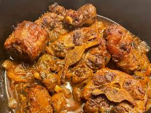

Jamaican Oxtail

"The BEST Southern Oxtail Recipe"
Being from the South, Oxtails are a luxury and a staple! This oxtail recipe comes from my
Mom when she would make smothered Oxtails on Sundays. Reminds me of a little piece of home.
Get ready to indulge in a bowl of soul-warming goodness!
Ingredients
- 1 pack of Oxtails
- 1 onion
- 2 cloves of garlic
- 1 cup of beef broth
- 1 cup of red wine
- salt, pepper, onion powder, and a touch of paprika
- First, sear the oxtails until all sides form a nice crust.
- In the same pot, saute the onions and garlic until fragrant.
- Next, pout in red wine to deglaze and then nestle the oxtails back into the pot.
- Pour in beef broth until it partially covers the oxtails. Season with
salt, pepper, paprika, and your favorite beef seasoning.
- Take the oxtails and place them in the oven allowing them to slow cook
at 120°F. for about 4 hours.
- Lastly, watch the most tender meat melt in your mouth!
Home